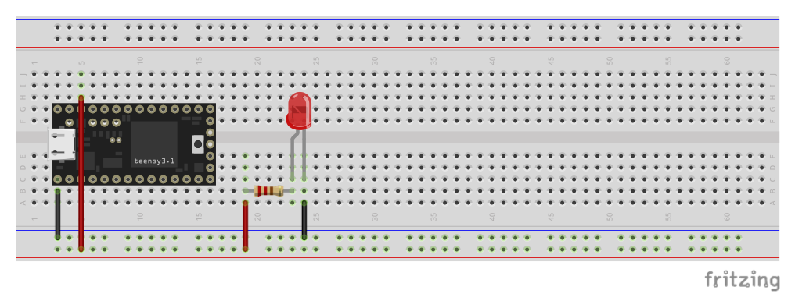

01-00 LED 3.3V
Zapojenie:
Mikrokontrolér PIN GND zapojíme na stĺpec (-) breadboardu
Mikrokontrolér PIN 3V3 zapojíme na stĺpec (+) breadboardu
Vodič zapojíme na stĺpec (+)
Druhý koniec vodiča zapojíme na voľný riadok
Na rovnaký riadok zapojíme jednu stranu odporu (330 Ohm)
Druhý koniec odporu zapojíme na ďalší voľný riadok (odpor nemá polaritu, t.j. môžeme ho zapojiť oboma smermi)
Na rovnaký riadok zapojíme LEDku (POZOR na polaritu: dlhšou nohou k odporu)
Kratšiu nohu LEDky zapojíme na stĺpec (-)
Program:
Žiadny.
Funkcionalita:
LEDka sa po zapojení mikrokontroléra do USB rozsvieti a konštantne svieti.
Tento príklad nevyužíva žiadny digitálny pin, ale na napájanie LEDky používa 3V3 PIN, ktorý ak je mikrokontrolér zapojený do USB neustále napája napätím 3.3V.

01-01 LED Blikanie
Zapojenie:
Vychádzame z pôvodného zapojenia a urobíme nasledovné zmeny:
Červený vodič, ktorý spája stĺpec (+) s odporom odpojíme zo stĺpca a napojíme na riadok s PIN 12 mikrokontroléra.
Program:
Funkcionalita:
Program striedavo preblikáva internú LEDku na plošnom spoji mikrokontroléra aj LEDku na breadborde v sekundových intervaloch.